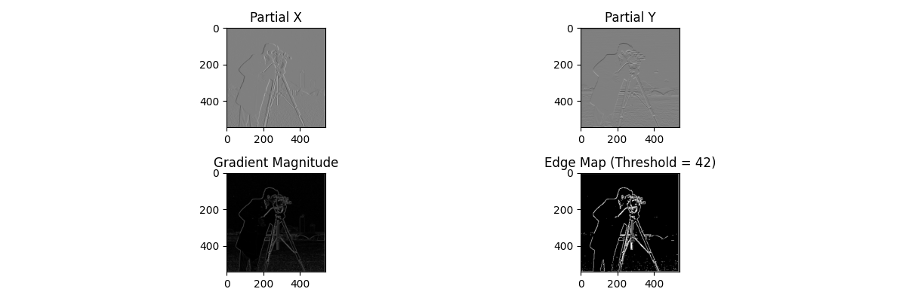
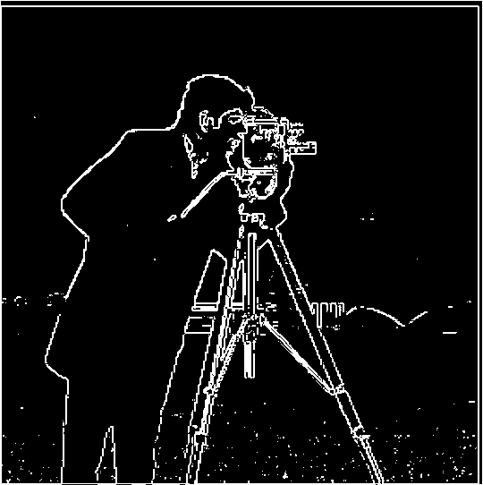
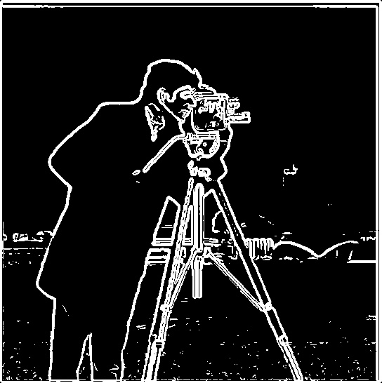
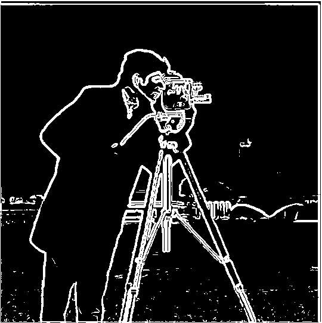
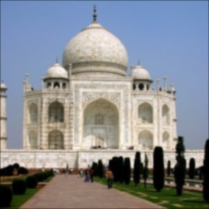
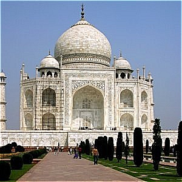
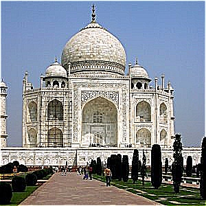
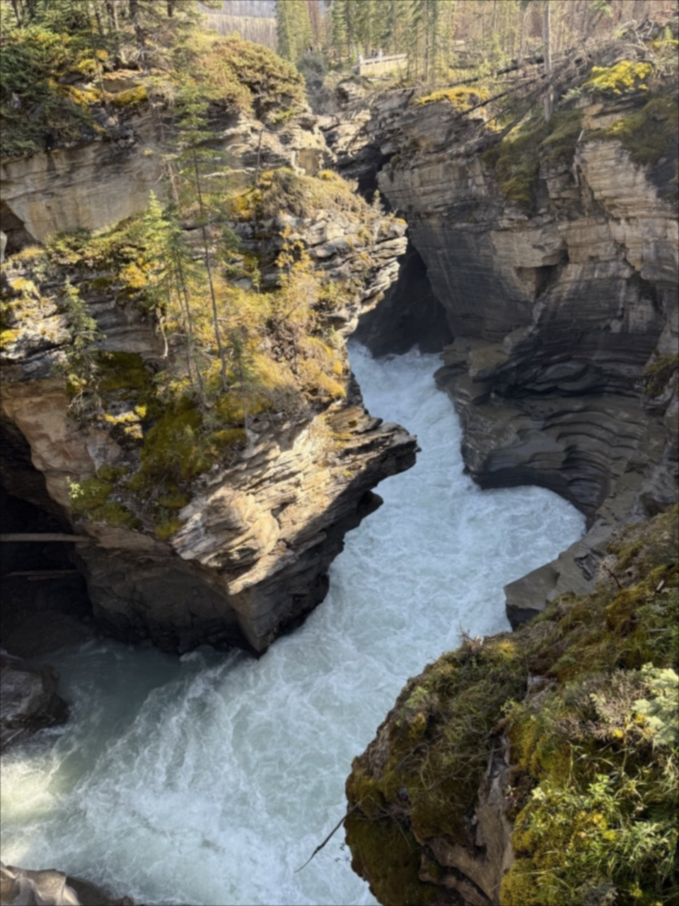
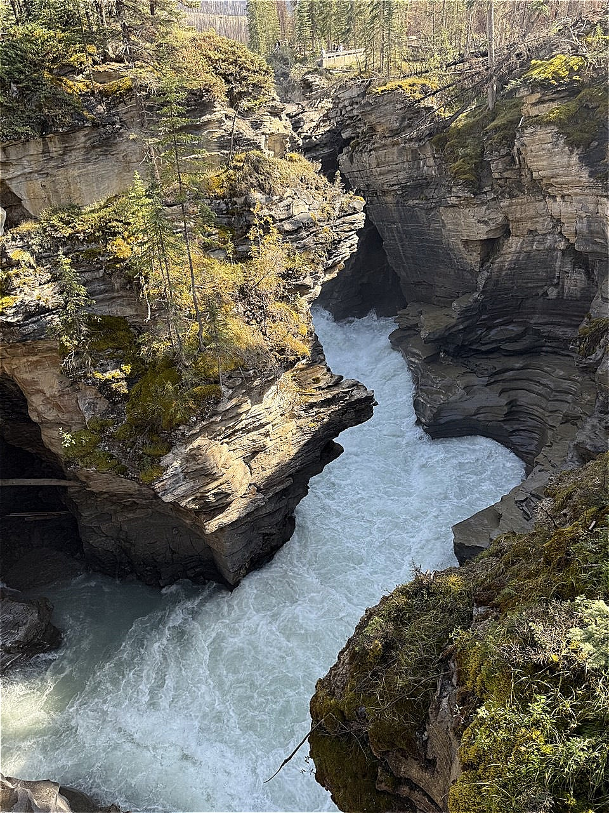

Part 1.2: Finite Difference Operator

Showcase of the partial derivatives, gradient magnitude and edge map
For my edge map, I chose the threshold to be equivalent to 42 as this still allowed for the edges of
the building in the background to be reduced while keeping the noise from the grass at a minimum.

Part 1.3: Derivative of Gaussian Filter
We can see from the results that after applying the Gaussian filter, the edge detection is much cleaner
and the edges are sharper as compared to just applying the finite difference operators. However, this also
allowed us to see the edges from the grass on the bottom of the cameraman picture more clearly, which could
seem like additional noise. The results from the DoG filter and applying the Gaussian filter first before
convolution with the finite difference operators are the same. This is to be expected since convolution is
commutative.

Edge map before Gaussian Filter

Edge map after applying Gaussian first

Edge map after applying DoG filter
Part 2.1: Image "Sharpening"
The unsharp mask filter works first by applying the blur filter by convolving the image with the Gaussian
kernel. This causes the resultant image to remove high frequencies and maintain lower-frequencies. We then
subtract this blurred image from the original image to get only the high frequencies from the original image.
Adding back the high frequencies to the original image with a multiplier scale, we accentuate the high
frequencies, thus highlighting the sharp lines and edges in the image. Furthermore, we can see that as we
increase the degree of sharpening, the lines become increasingly obvious, however, as shown below, beyond
a certain degree, the sharpening effect becomes entirely unrealistic.
Original Taj image

Taj image after Gaussian blurring

Taj image sharpened with a scale of 2

Taj image sharpened with a scale of 5
Original waterfall image

Waterfall image blurred with Gaussian

Waterfall image sharpened
Blurred version of the waterfall image sharpened
As we can see from the example above, sharpening the blurred image still helps to return some sharpness to
the image. This actually brings it back to the original image as we are adding the high frequencies we
subtracted and could still be applying even more sharpening depending on the scale of our sharpening.